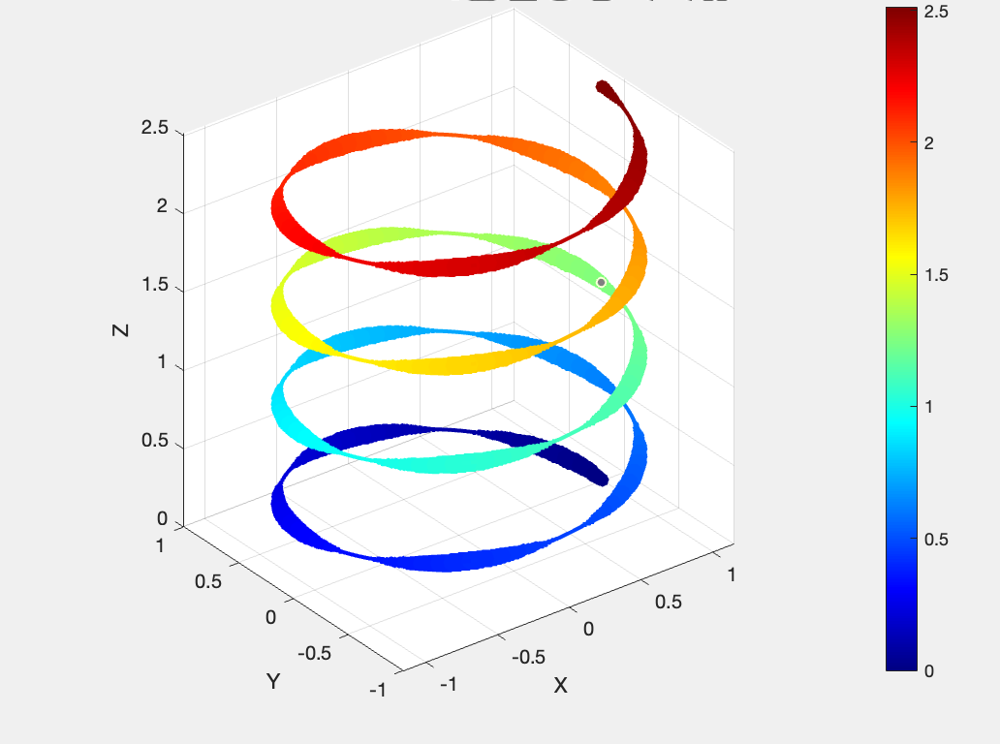
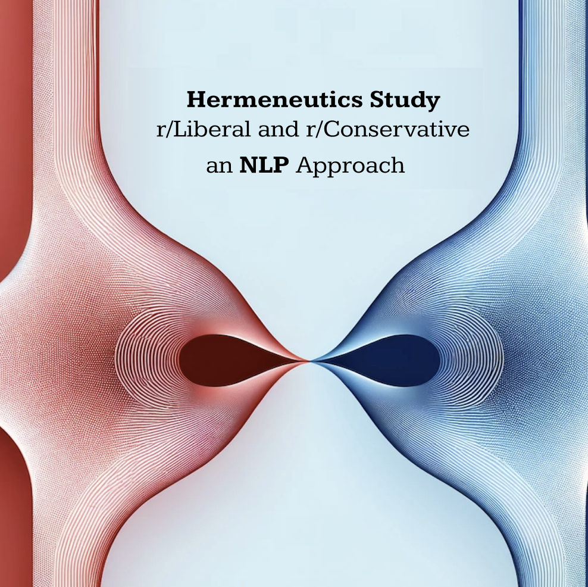
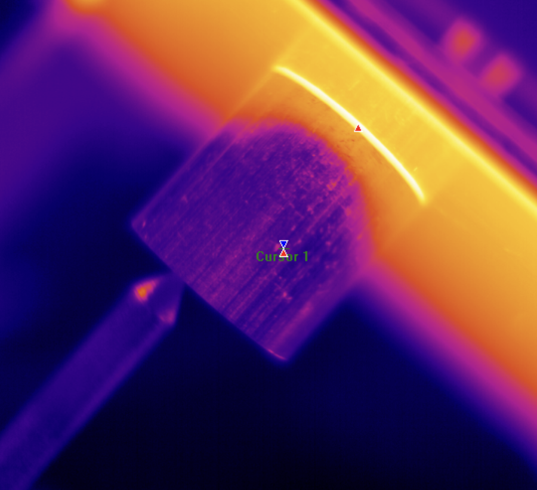

|
Chester Zelaya I am tech entrepreneur from UC Berkeley, specializing in the fusion of hardware and machine learning. A proud native of Costa Rica. I've personally led advancements in interactive holograms, traceable supply chain solutions, and healthtech algorithms. Pursuing a B.S in both M.E and EECS, my ambition is not just to engineer, but to envision and mobilize ideas to redefine contemporary benchmarks. “The secret of realizing the greatest fruitfulness and the greatest enjoyment of existence is: to live dangerously!" -Nietzsche |
{kind=link}
ResearchI specialize in machine learning, particularly in hardware control and integration. My past projects have leveraged IoT, blockchain protocols, and artificial intelligence to address real-world business challenges. |

|
Autonomous Turret System | Vodka Shooter
Chester Zelaya, Ibad Ali, Shayan Moghaddam, Mohamed Mouhab Circuit Design, C++, Embedded Systems, NVIDIA Jetson, OpenCV, Solidworks, State Machine Mechatronics Design Capstone Project 2023 An automated turret system with 3 D.O.F capable of shooting 10+ feet for the purpose of entertainment and defense. |
|
|
Holo: Hardware Device for Holographic Manipulation
Chester Zelaya FEA Analysis, Solidworks, Circuit Design, Kalman Filters, Computer Vision, Python, Sockets Co-founder, Startup, Patented, 2022 Applied hardware and software to create a standalone device capable of interacting with the Metaverse via holographic way. Demo |
|
|
EntreX: Dynamic LLM App for Optmized Startup Decisionmaking
Chester Zelaya Figma, MongoDB, Express, React, Node.js, HTML, CSS, HuggingFace, Mistral7B Public App, 2023 Implementing an architecture with fine-tuned models to gamify over-looked tasks in early stage startups. Website |
|
Aleth: A Decentralized Ledger for Supply Chain Traceability using Hyperledger Frabric
Chester Zelaya, Brandon Lee Raft Consensus Algorithm, Genesis Blocks, Node Management, MQTT Protocols, MERN Stack Co-Founder, Pre-Seed 2023 A permissioned blockchain and IoT infrastructure to better manage international supply chain provenance, led and mentored by accomplished entrepreneurs. Accelerator |
|
|
Cal Hacks 9.0: Provenance Copilot and Platform with GPT4 and LlamaIndex
Brandon Lee, Killian Mcshane, Chester Zelaya, Vikram Waradpande Figma, AWS Lambda, GPT4, Llama Index, MERN Stack Hackathon, 2023 A provenance copilot to help sellers and buyers find the least disrupted route from pick up to delivery. Parameters calculated included: Weather, Geopolitical Disputes, News Scraping, etc... Pitchdeck| Demo| Code |
|
|  |
Kalman Filtering Methods for Improved Absolute Space Estimation in IMUs
Chester Zelaya Matlab, Python, Machine learning Technical Report, 2022 Implementing quaternions and integral control systems to estimate absolute space positioning of IMU. |
|
MAIA: Validating Neural Networks for Heart Disease Detection with Apple Watch Biometrics
Chester Zelaya Matlab Startup Competition, 2022 Using Matlab to implement and optimize a neural network for the healthcare industry. Achieved 870/1000 (87%) patients were correctly identified for having or not having a cardiovascular disease. |
|
|  |
Hermeneutics of r/Liberal and r/Conservative: An NLP Approach for Investigating Politcal Divide
Chester Zelaya Python, Gensim, spaCY Reserach Paper, 2023 Through cutting-edge methodologies in Natural Language Processing, this research deciphers the nuanced discourse patterns of opposing online political communities, offering insights into the underpinnings of today's societal polarizations. Research Paper |
|  |
Exploring 3D Printing as an Alternative in Linear Expansion Coefficient Determination
Chester Zelaya, Jisoo Jung, Gunit Pabla, Nathan Yacovetta April 20, 2023 Challenging the traditional way of determining the linear expansion coefficient through a potentially affordable and accesible method. Research Paper |
|
Surface Optimization for Non-Euclidean Geometries
Chester Zelaya Matlab, Solidworks Simulation, 3D printing Technical Project, 2021 Through a blend of nature and technology, this study compares how soap bubbles naturally shape themselves to computer simulations, revealing exciting potential applications for surface analysis. |
Work Experience |
|
Project Lead | Autonomous Robotics
PSC Biotech Spring/Summer, 2021 Designed a fully autonomous robot for the pharmaceutical industry. Advised by the CEO, presented project to the board of directors. |
Certifications |

|
Professioanl Back-End Developer Certificate
IBM Certificate, 2023 Software Development, Software Deployment, Software Scaling, Microservices, System Architecture, Cybersecurity, ML Models, Django and Flask, MERN Stack. |

|
Machine Learning
Stanford Certificate, 2022 Supervised and unsupervised model implementations and deployment with matlab ex. Linear regression, Binary classification, K-Means cluster, SVM, Troubleshooting and Optimizing models, etc... |

|
Quantum Computing and Algorithms
MITxPro Certificate, 2022 Learned and derived mathematical models for modern quantum computers. Developed and implemented algorithms using IBM's live computer. |
|
Entrepreneurship and Technology
UC Berkeley Certificate, 2022 Traveled abroad to commpete on a startup competition with 400+ international students, mentored by Ken Singer and Pamela Nedik Induni. |
|
|